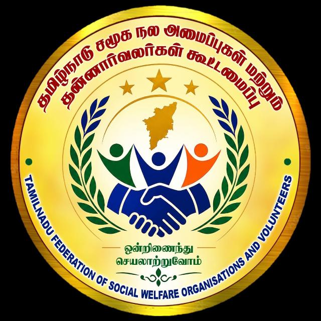

சமூக மாற்றத்திற்கான தன்னார்வ சக்தி
தமிழ்நாடு முழுவதும் உள்ள சமூக நல அமைப்புகளையும் தன்னார்வலர்களையும் ஒரே குடையின் கீழ் இணைக்கும் தளம்.
உறுப்பினராக இணையுங்கள்எங்களது கூட்டமைப்பு தமிழ்நாடு முழுவதும் இயங்கி வரும் சமூக நல அமைப்புகள், தொண்டு நிறுவனங்கள் மற்றும் தன்னார்வலர்களை ஒருங்கிணைத்து, சமூகத்தில் பின்தங்கிய மக்களுக்குக் கல்வி, மருத்துவம், சுற்றுச்சூழல் மற்றும் வாழ்வாதார உதவிகளை வழங்க பாடுபடுகிறது.
ஏழை மாணவர்களின் கல்வி மேம்பாட்டிற்கு உதவுதல் மற்றும் கல்வி வழிகாட்டுதல் வழங்குதல்.
மருத்துவ முகாம்கள், குருதி தான விழிப்புணர்வு மற்றும் அவசர உதவி சேவைகள் செய்தல்.
மரம் நடுதல், பிளாஸ்டிக் ஒழிப்பு மற்றும் இயற்கை வளங்களைப் பாதுகாக்கும் விழிப்புணர்வு.
📍 முகவரி: தமிழ்நாடு சமூக நல அமைப்புகள் மற்றும் தன்னார்வலர்கள் கூட்டமைப்பு, தமிழ்நாடு.
📞 தொலைபேசி / வாட்ஸ்அப்: +91 9994050550
✉️ மின்னஞ்சல்: tnfswov@gmail.com
💬 வாட்ஸ்அப் வழி தொடர்பு: இங்கே கிளிக் செய்து வாட்ஸ்அப்பில் பேசலாம்